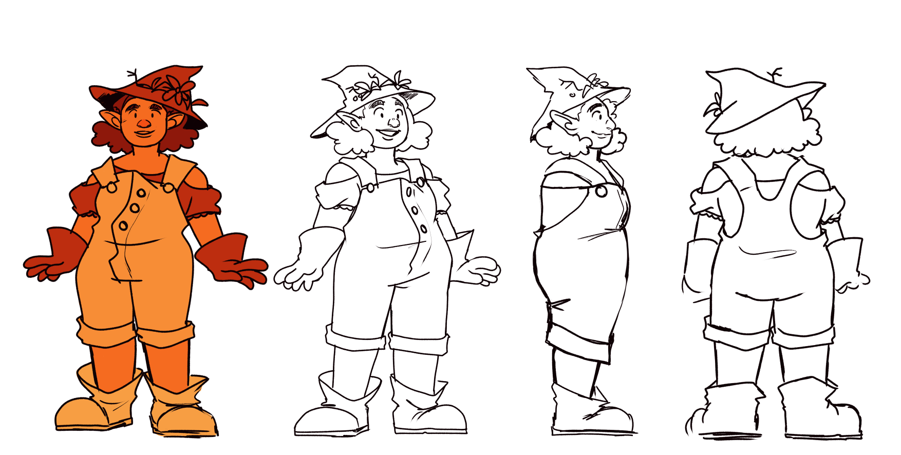
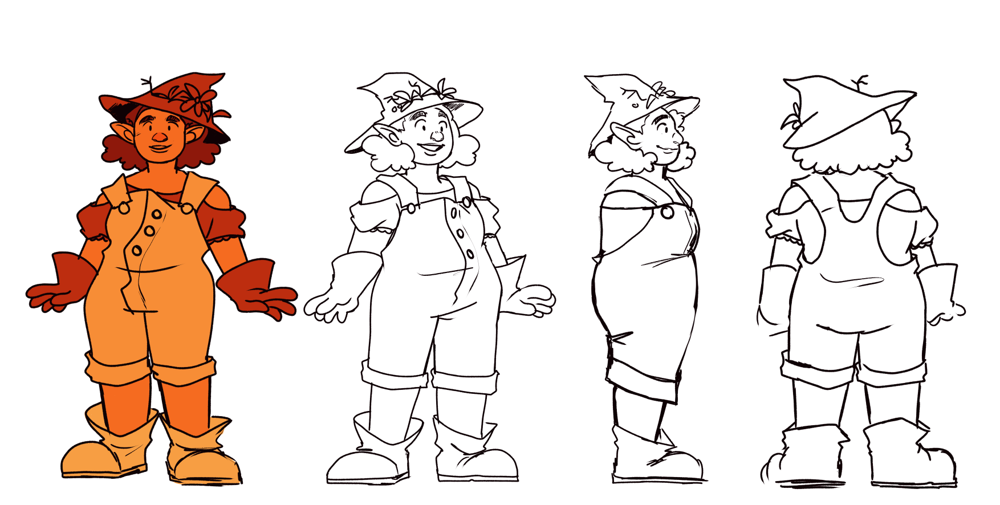
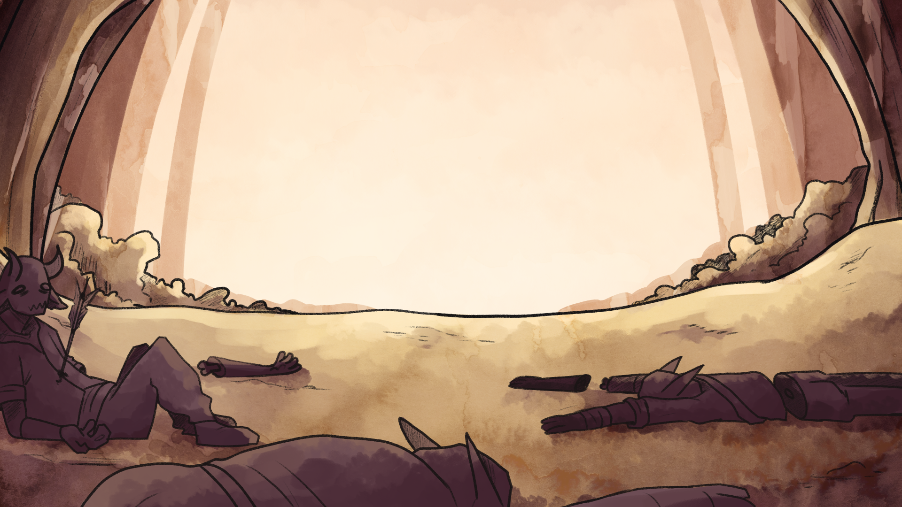
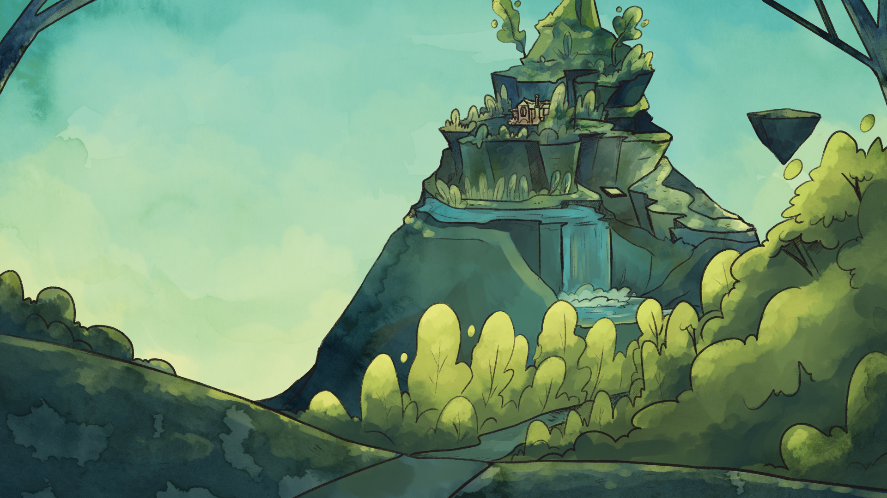
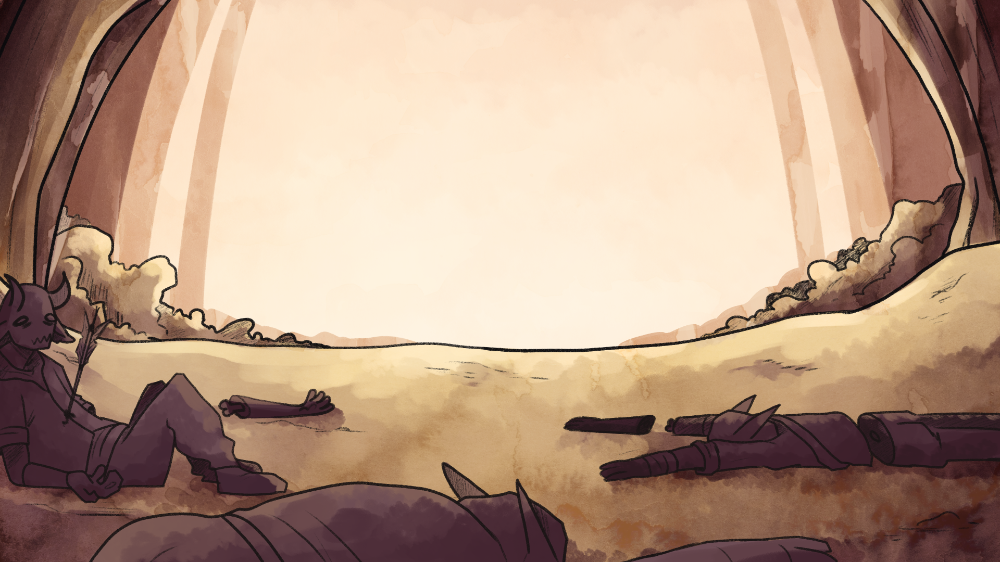
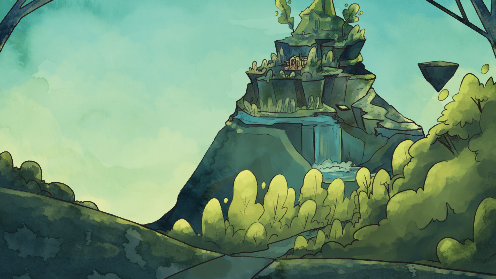

Sincerely is my bachelor’s graduation film, for my course at AKV St Joost. The short follows Prom, a postal worker who goes on a journey through a fantastical world to deliver a very special letter. It’s a lighthearted short focused on LGBTQ+ themes and the world Prom travels through takes inspiration from platformer video games. It was animated in TvPaint and the backgrounds are a combination of digital illustrations and handmade watercolour textures.
Sincerely premiered at Cinekid Festival and was also screened at Festival, Cardiff Animation Festival, and Amor es Amor Festival.
The music was composed by Stijn van Wakeren.
 


 


